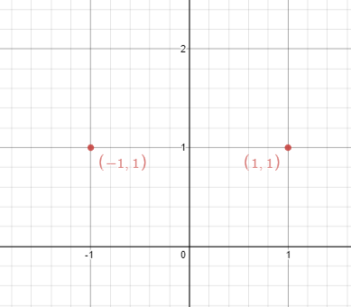
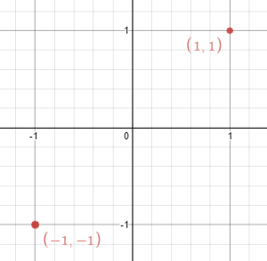

| Category | Difficulty | Likes | Dislikes |
|---|---|---|---|
| Algorithms | Medium | 315 | 637 |
array | hash-table | math
yandex | google
Given n points on a 2D plane, find if there is such a line parallel to the y-axis that reflects the given points symmetrically.
In other words, answer whether or not if there exists a line that after reflecting all points over the given line, the original points' set is the same as the reflected ones.
Note that there can be repeated points.
Example 1:

Input: points = [[1,1],[-1,1]]
Output: true
Explanation: We can choose the line x = 0.Example 2:

Input: points = [[1,1],[-1,-1]]
Output: false
Explanation: We can't choose a line.
Constraints:
n == points.length1 <= n <= 104-108 <= points[i][j] <= 108
Follow up: Could you do better than O(n2)?